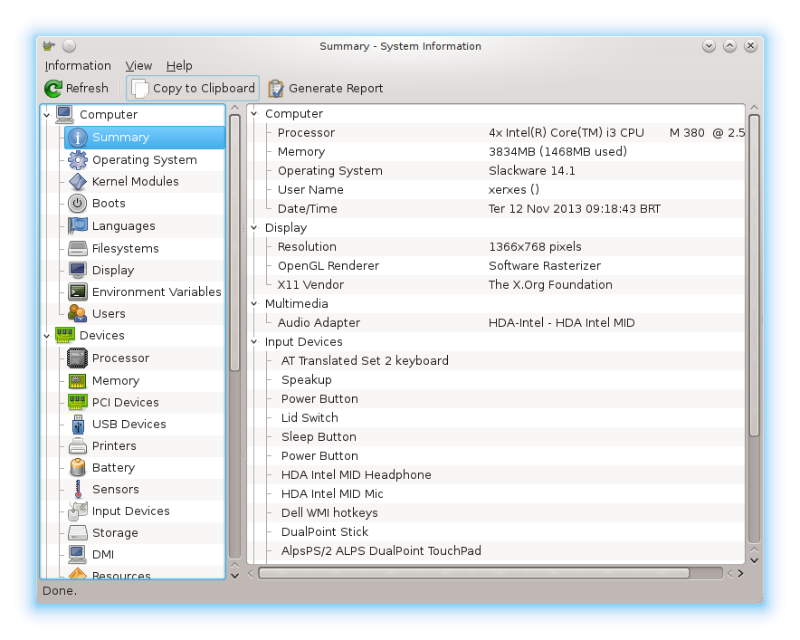

Hardinfo Descobrindo e testando seu hardware
Existem várias formas de se explorar o hardware de seu PC (CPU, RAM, HD...), aqui vou apresentar uma maneira rápida e prática para isso. Embora existam vários comandos de console e arquivos de sistema que possam ser consultados, aqui vou lhes apresentar uma ferramenta (app) que pode ser facilmente utilizada nos ambientes Linux. A ferramenta em questão é o Hardinfo.
O aplicativo detecta o hardware presente em sua maquina, apresentando informações detalhadas e emite relatórios sobre seu hardware, além disso é possivel executar testes de desempenho na CPU para avaliar a capacidade de processamento. O software é de facil instalação e esta disponivel no Linux em versões que eu pude conferir para Slackware através do Slackbuilds e no repositório do Ubuntu. O aplicativo roda em ambiente gráfico e veremos abaixo como instala-lo.
Instalação Slackware
No Slackware é necessário buscar hardinfo no slackbuilds.org e então baixar o arquivo source hardinfo-0.5.1.tar.bz2 e o arquivo build hardinfo.tar.gz e fazer a compilação da build para o Slackware, depois instalar o pacote resultante com o comando installpkg.
OBS: Caso seja necessário um passo a passo detalhado do processo de compilação de pacotes Slackbuild consulte o canal do Youtube slackjeff onde existe um video detalhado sobre o assunto.
Instalação Ubuntu e flavors
Em sistemas Ubuntu e derivados a instalação é simples bastando rodar o comando abaixo que irá baixar e instalar o pacote binário direto do repositório do Ubuntu.
sudo apt install hardinfo